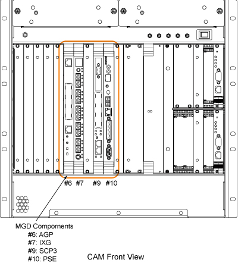

Illustration 3: MGD Components in CAM Chassis - Front View

| Slot Number(s): From left to right | Board Name |
|---|---|
| 1-5 | Spare Slot |
| 6 | Application Gateway Processor 2 (AGP2) Processor Board |
| 7 | Interface, Remote & Extream Gradient Processor (IXG) Board |
| 8 | Spare Slot |
| 9 | Scan Control Processor 2 (SCP2) Board |
| 10 - 11 | Pulse Sequence Engine (PSE) Board |
| 11 - 13 | Spare Slot |
| 14 - 15 | Power Supply Module |